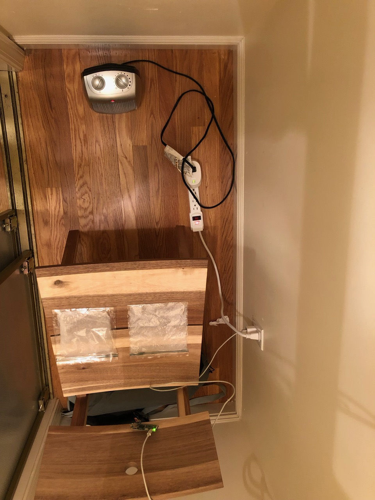
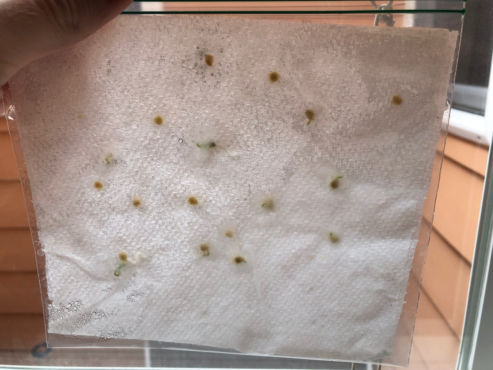
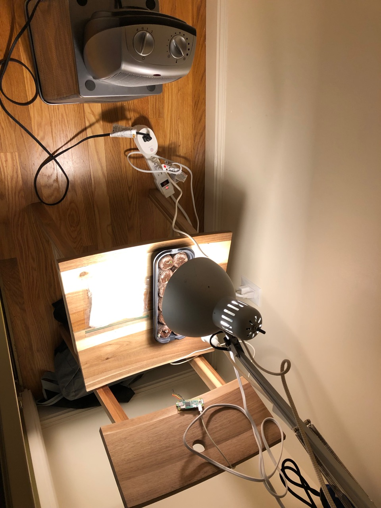
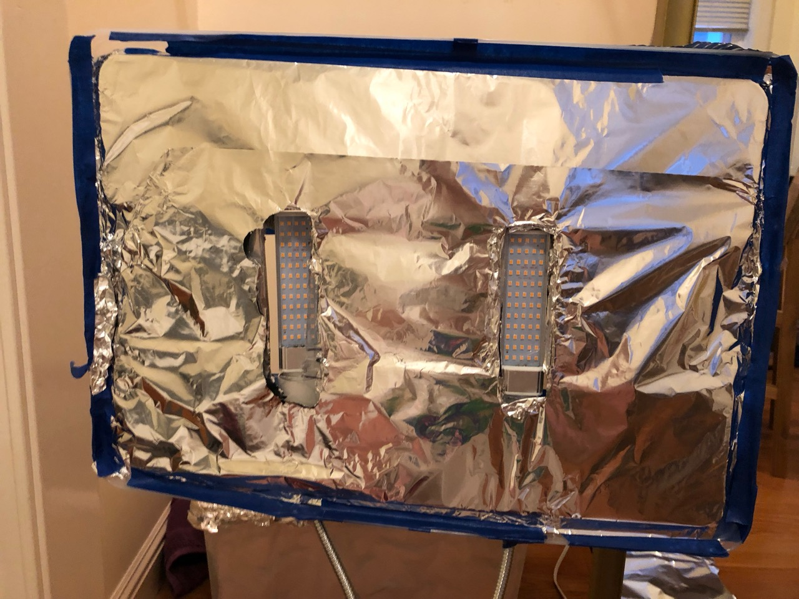
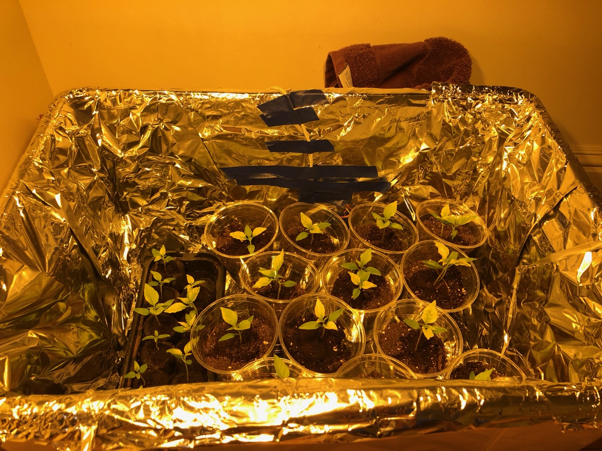
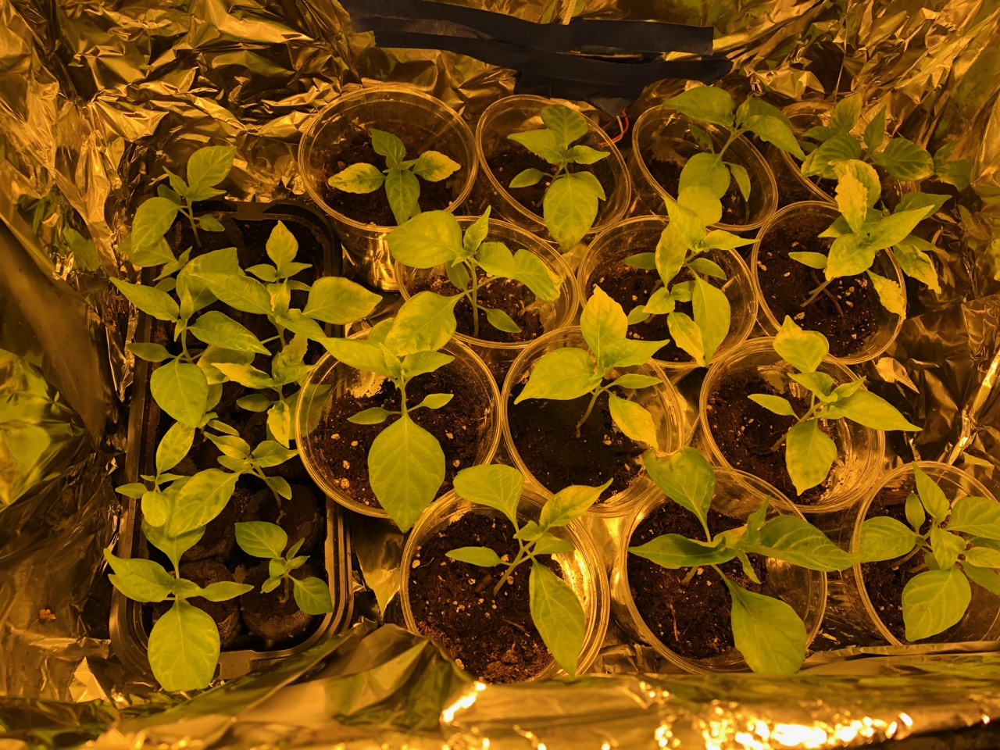
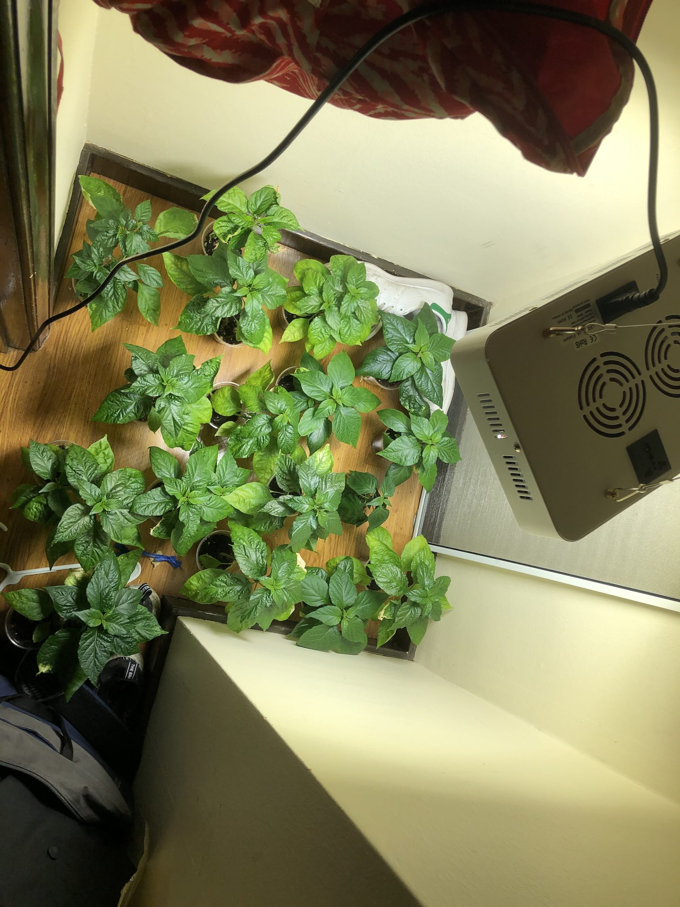

I've always been a fan of spicy food, sometimes to my dismay. I've eaten ghost pepper products a few times in spicy food challenges, but never the raw pepper. So I decided to grow some.
Unfortunately, the climate and weather of San Francisco isn't exactly conductive to growing them, so I decided to grow them indoors in our spare bedroom. So I bought some seeds and set off on this adventure.
I was pretty worried about germination because I read that ghost pepper seeds are difficult to germinate and can take a month. So I ended up using the paper towel method and a Raspberry Pi Zero with a temperature sensor, combined with a space heater connected to a smart plug to regulate the tempature to the 80-90F that I read was required for germination. At this point, light wasn't important, so I didn't have any real lights other than the one in the closet. 
  Once they were growing too big for the paper bags, I transferred them to these small seed starters that I got from home depot and bought a 40w grow light to encourage them to grow more. This worked great until they outgrew the seed starters. I then got a plastic container from Ikea and some cups for the next stage of growth. I've been keeping them with 12 hours of light a day, and still regulating the temperature of the closet they are in to a nice 75-80f.  
 From the looks of things it looks like I'll need to get another, bigger container soon. I'll post updates when they start to bear peppers. Setting up a livestream in the box is a fun idea too that I might explore.
 With fertilizer, they've been going strong for a while now. I got a new ~200-300w led bulb and moved them to a bigger closet. They are just starting to bud.